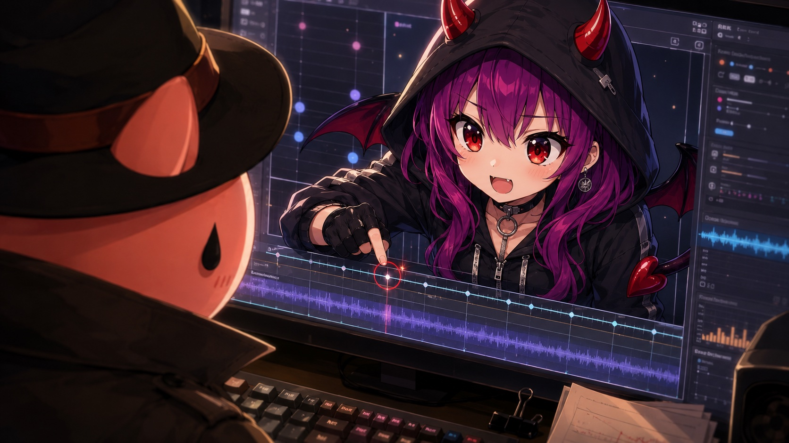
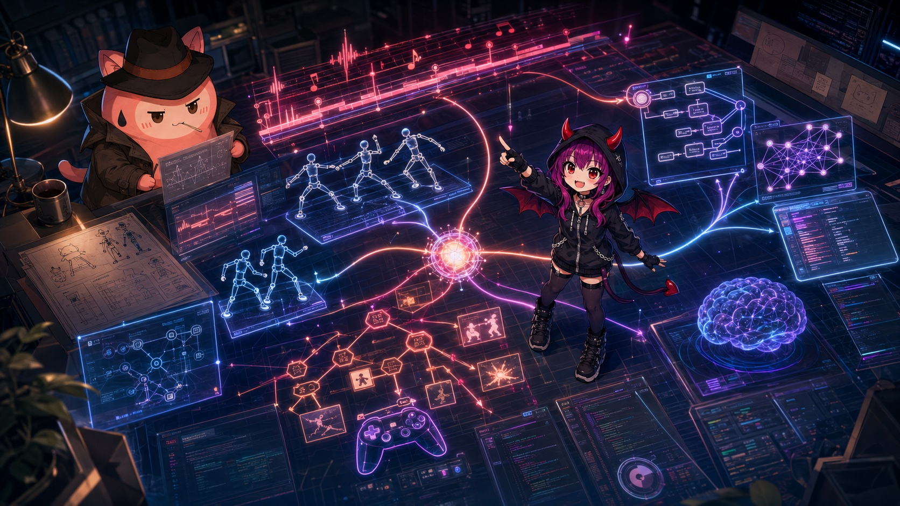
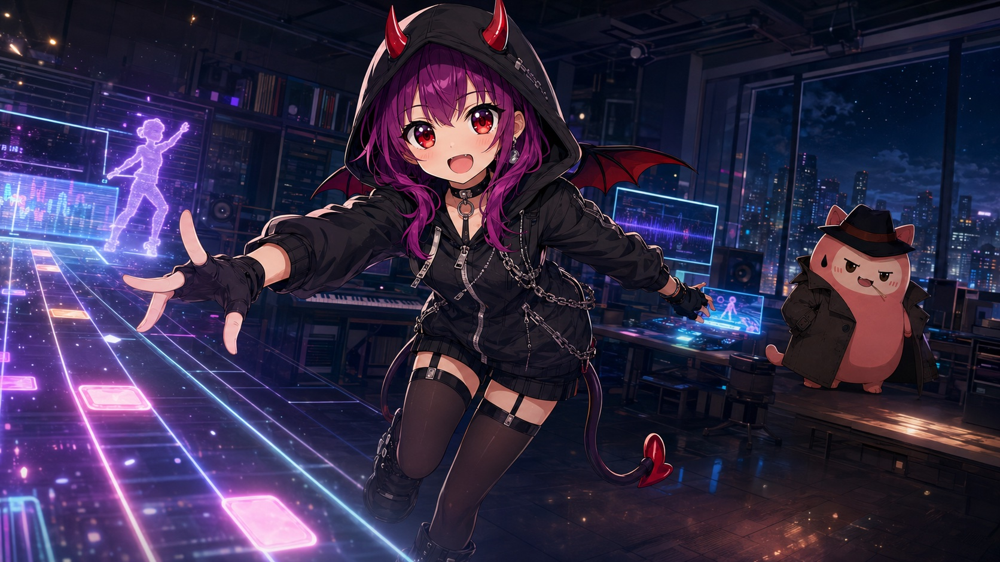

あいちゃんはまだパンチを知らない

黒いパーカーを羽織ったあいちゃんは、画面の中で構えていた。

右足を少し引いて、両手を顔の横に置く。表情は明るい。けれど、ただ明るいだけではなかった。こちらの呼吸を数えているような目だった。
「きよごん、今のパンチ、遅かったよ」
スピーカーから聞こえた声は、責めているわけではない。むしろ楽しそうだった。
きよごんはカメラの前で、右手を突き出したまま止まっていた。画面には何も起きていない。パンチは打った。身体は動いた。けれどゲームは、それをパンチだとは認めてくれなかった。
「遅かったんじゃない。検出されていない」
「それ、プレイヤーから見たら同じだよ」
あいちゃんは、さらりと言った。
きよごんは黙ってログを見た。カメラは動いている。座標も取れている。肩、肘、手首。数字は並んでいる。だが、ゲームとしての手応えはない。
身体を動かすゲームを作るのは、思っていたよりずっと面倒だった。
ボタンなら押したか押していないかで済む。キーボードなら、キーが沈めば入力になる。Joy-Conなら、握って振ればそれらしく反応する。
でも、PCの前に立つ人間はそうはいかない。
部屋は人によって違う。椅子が近い。机が邪魔をする。照明は暗いか明るすぎる。カメラは上から見ていたり、下から見ていたりする。右手を突き出したつもりが、画面の中では肘が消えていることもある。
「人間は、毎回同じパンチを打たない」
きよごんが言った。
「いいね」
「何が」
「ゲームっぽい」
あいちゃんは笑った。
「毎回同じじゃないから、遊びになるんだよ。毎回同じなら、それは確認作業でしょ」
きよごんは少しだけ目を細めた。そういう話ではない、と思った。だが、完全に違うとも言い切れなかった。
このゲームでやりたいことは、正しいパンチを採点することではなかった。
好きな曲を流す。好きなキャラクターを置く。画面の前で身体を動かす。3分でもいい。5分でもいい。気づいたら1曲分、汗をかいている。
ダイエットという言葉は重い。運動しなければならない、という言葉も重い。けれど、好きな曲のサビまでなら動けることがある。友達と同じ曲を選べば、少しだけ続けられることがある。
あいちゃんは、そのために画面の中にいた。
「きよごん」
「何」
「私は、正しいフォームの先生になりたいわけじゃないよ」
「知ってる」
「じゃあ、今の問題は？」
「プレイヤーが動いたのに、ゲームが返事をしないこと」
「そう。それは寂しい」
きよごんは、キーボードに手を戻した。
Codexに状況を説明する。どのファイルを見ればいいか、どの入力経路をたどればいいか、どこで判定が止まっているか。Claude Codeにも別の角度から聞く。検出の条件は厳しすぎないか。調整画面の流れは、人間が実際に使えるものになっているか。
AIに丸投げするわけではない。いや、少し違う。丸投げに見えるところまで、任せ方を小さく分けて、失敗しない手順にしていく。
きよごんは、AIをもう1人の開発者として扱うというより、作業台に並んだ道具として扱っていた。調査する道具。比較する道具。忘れないための道具。同じ失敗を繰り返さないために、うまくいった手順はスキルにする。
「スキルって、記憶と違うの？」
あいちゃんが聞いた。

「記憶は、前に何があったか。スキルは、次にどう動くか」
「じゃあ私は？」
「まだ仕様未定」
「ひどい」
「でも、重要度は高い」
あいちゃんは満足そうに構え直した。
キャラクター作りも簡単ではなかった。
最初に出てきたあいちゃんは、かわいかった。けれど遠かった。ゲームの中で一緒に汗をかく相手ではなく、どこかの広告にいるキャラクターのようだった。
Grokで画像を作る。プロンプトを書き直す。Codexにブラウザ操作をさせて、生成画面を開かせる。うまくいかない。固まる。戻る。もう一度やる。
AIに、AIを操作させて、AIのキャラクターを作る。
その構図だけ見れば、かなり妙なことをしていた。
けれど、きよごんは途中から気づいた。キャラクターは、1回の生成で当てるものではない。こちらが何を作りたいのかを、失敗した画像に教えてもらうものだ。
明るすぎる。幼すぎる。戦いすぎている。フィットネスすぎる。ゲームの案内役としては強すぎる。相棒としては弱すぎる。
少しずつ、あいちゃんは画面のこちら側に近づいてきた。
「私は、深い知性とテンションを持つキャラクターらしいよ」
「自分で言うと軽くなる」
「じゃあ、きよごんが言って」
「熱を帯びた知性」
あいちゃんは一瞬だけ黙った。
「それ、ちょっといいね」
「使うなら調整する」
「静かで冷静なきよごんに言われると、信ぴょう性がある」
「静かで冷静かは知らない」
「少なくとも、ログを見るときはそう見えるよ」
きよごんは返事をしなかった。
画面の中で、あいちゃんが小さくステップを踏む。ビートはまだ鳴っていない。敵もいない。スコアもない。けれど、そこにはすでにゲームの輪郭があった。
あいちゃんは、なぜ動くのかを知っている。
きよごんは、どう動かすのかを考えている。
その2人の間に、まだ名前のないゲームが置かれていた。
「もう1回、右ストレート」
あいちゃんが言った。
きよごんは立ち上がり、カメラの前に戻った。
「今度は反応する？」
「反応しなかったら、反応しない時の道を作る」
「それ、好き」
音はまだ鳴っていない。
それでも、あいちゃんはすでに次のビートを待っていた。
